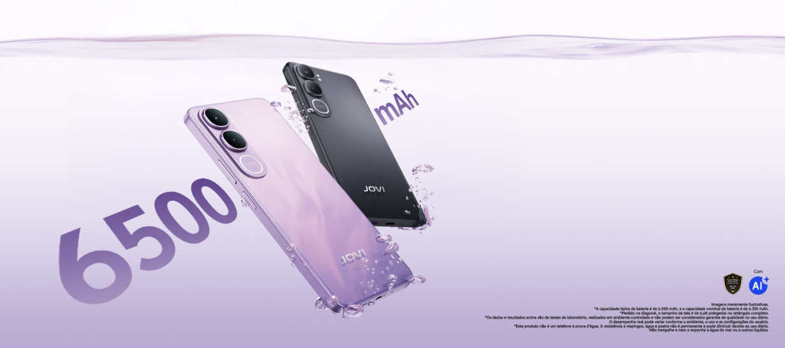
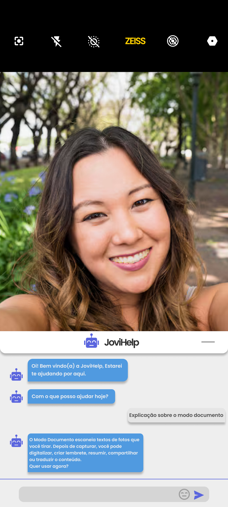
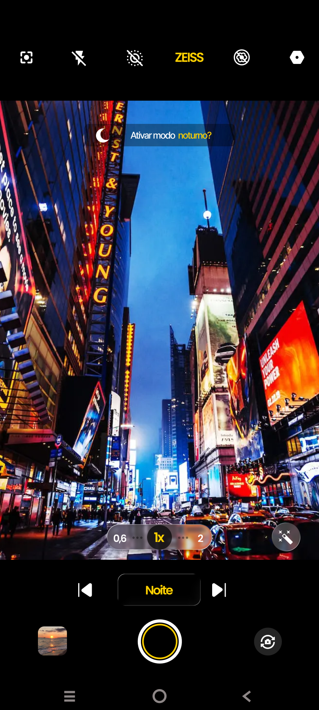
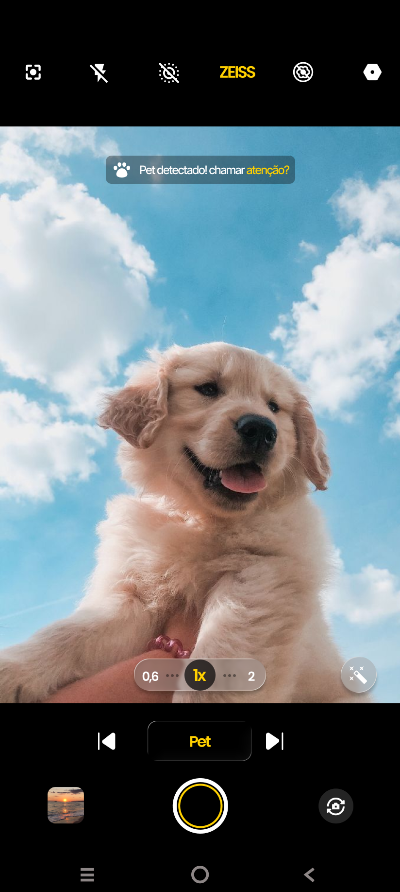
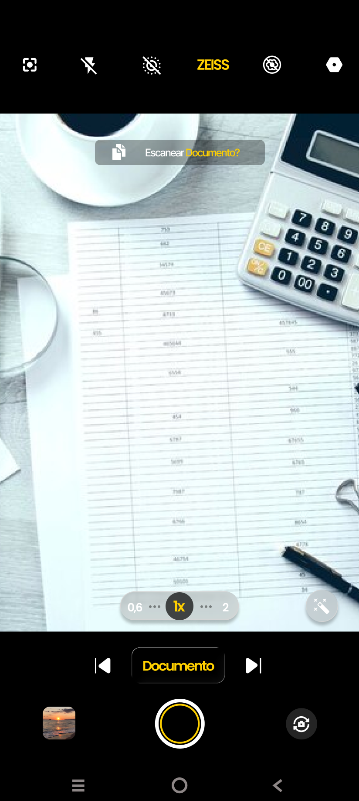

Equipe

Davi Toyota

Diego Rocha


Nosso objetivo é tornar a experiência do usuário bem mais simples, intuitiva e eficiente. Por meio de um chatbot integrado, oferecemos suporte personalizado para que cada pessoa possa explorar e configurar todos os recursos disponíveis com mais facilidade. Assim, o uso das ferramentas da câmera se torna mais prático, rápido e acessível, elevando a experiência de interação com o dispositivo.
O protótipo do assistente integrado JoviHelp utiliza inteligência artificial baseada em chat para interagir diretamente com o usuário e oferecer suporte contextual sobre os recursos da câmera. Ao receber dúvidas ou comandos (como o pedido de explicação sobre o Modo Documento), o assistente responde em tempo real detalhando as funções do aplicativo incluindo digitalização, criação de lembretes, resumos e traduções do conteúdo capturado, oferecendo atalhos rápidos para ativar o recurso desejado na hora.

O protótipo do Modo Noturno utiliza inteligência artificial para identificar cenários com baixa luminosidade ou ambientes noturnos, alternando automaticamente para o modo de captura ideal. Ao detectar a escassez de luz, o sistema exibe a sugestão "Ativar modo noturno?", preparando a câmera para otimizar a exposição, reduzir ruídos e capturar detalhes mais claros e nítidos automaticamente.

O protótipo do Modo Pet utiliza inteligência artificial para reconhecer instantaneamente animais de estimação no enquadramento, alternando automaticamente para o modo de captura ideal. Ao detectar o animal, o sistema exibe a sugestão "Pet detectado! chamar atenção?", um recurso projetado para emitir estímulos sonoros ou visuais que fazem o pet olhar para a câmera, garantindo fotos nítidas e perfeitamente focadas de forma automatizada.

O protótipo do Modo Documento utiliza inteligência artificial para reconhecer instantaneamente papéis, recibos ou planilhas no enquadramento, alternando automaticamente para o modo de captura ideal. Ao detectar a estrutura, o sistema exibe a sugestão "Escanear Documento?", preparando a câmera para realizar uma digitalização limpa e otimizada de forma automatizada.

Somos a Visionists, uma equipe focada em melhorar a experiência dos usuários com a câmera do smartphone por meio da Inteligência Artificial.
Com o CamSense, buscamos tornar os recursos da câmera mais simples, intuitivos e acessíveis, oferecendo sugestões inteligentes em tempo real e suporte integrado ao usuário.